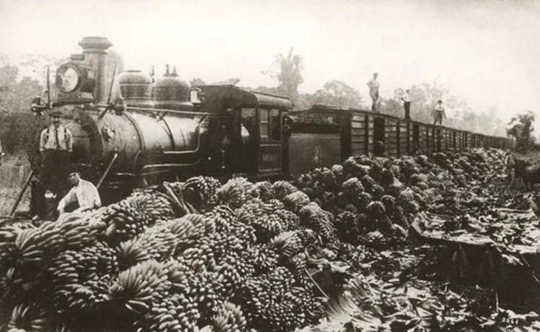

La Masacre de las Bananeras: sangre y memoria en Ciénaga
Historia / Conflictos sociales / Casos documentados

La historia
En el departamento del Magdalena, entre las plantaciones bananeras y las vías ferroviarias que conectaban los cultivos con los puertos de exportación, se desarrolló uno de los acontecimientos más dolorosos de la historia colombiana: la Masacre de las Bananeras. Este episodio ocurrió en diciembre de 1928, principalmente en el municipio de Ciénaga, donde trabajadores de la industria bananera se enfrentaron a las condiciones laborales impuestas por la United Fruit Company.
Durante aquella época, la empresa estadounidense tenía una importante influencia económica en la región. Sus actividades abarcaban la producción, comercialización y exportación de banano. Miles de trabajadores participaban en las labores agrícolas y de transporte, muchas veces bajo condiciones laborales precarias y con escasa protección social.
Ante esta situación, los trabajadores comenzaron a organizarse para exigir mejores condiciones de empleo. Sus reclamaciones incluían aumentos salariales, seguros colectivos, atención médica, descanso dominical remunerado, mejores condiciones de vivienda y el reconocimiento de sus derechos laborales.
Las negociaciones no llegaron a una solución satisfactoria. La inconformidad creció y el 12 de noviembre de 1928 comenzó una huelga masiva que paralizó buena parte de las actividades de la zona bananera del Magdalena. Miles de trabajadores participaron en la protesta, convirtiéndola en uno de los movimientos obreros más importantes de la historia del país.
La huelga de los trabajadores bananeros
La protesta fue organizada por la Unión Sindical de Trabajadores del Magdalena, que presentó un pliego de peticiones dirigido a la United Fruit Company y a los productores de la región.
Entre las principales exigencias se encontraban el reconocimiento de los trabajadores como empleados directos, el cumplimiento de las normas laborales, el pago semanal de los salarios, la eliminación de los vales utilizados como forma de remuneración y la supresión del sistema de contratación mediante intermediarios.
La compañía no aceptó las principales solicitudes de los trabajadores. Mientras tanto, la huelga continuaba y la tensión aumentaba entre los manifestantes, los empresarios y las autoridades colombianas.
La situación adquirió una dimensión política y militar. El Gobierno comenzó a considerar la protesta como un problema de orden público y desplegó tropas en la región. La presencia militar y las medidas de control incrementaron la tensión en los municipios de la zona bananera.
La noche del 5 y la madrugada del 6 de diciembre de 1928
Durante los primeros días de diciembre, numerosos trabajadores se concentraron en la plaza de Ciénaga, esperando una respuesta del Gobierno y de los representantes de la empresa. Muchos confiaban en que finalmente se alcanzaría un acuerdo para resolver el conflicto laboral.
El 5 de diciembre, los manifestantes esperaban la llegada del gobernador y de representantes de la compañía para concretar una negociación. Sin embargo, estos no llegaron. En medio de la tensión, el presidente Miguel Abadía Méndez decretó el estado de sitio y designó al general Carlos Cortés Vargas como jefe civil y militar de la zona.
Durante la madrugada del 6 de diciembre, las tropas del Ejército colombiano abrieron fuego contra los trabajadores concentrados en la plaza de Ciénaga. Los disparos provocaron una tragedia que marcó para siempre la memoria de la región y se convirtió en uno de los episodios más graves de represión contra el movimiento obrero colombiano.
Después de los acontecimientos, se desarrollaron operaciones militares y persecuciones contra trabajadores y personas vinculadas con la huelga. La región permaneció bajo un ambiente de vigilancia y represión, mientras las noticias sobre lo ocurrido comenzaban a circular por el país.
Las víctimas y el número de muertos
Una de las preguntas más difíciles de responder sobre la Masacre de las Bananeras es cuántas personas murieron realmente. Las cifras oficiales de la época fueron cuestionadas por dirigentes políticos, periodistas, investigadores y familiares de las víctimas.
El general Carlos Cortés Vargas presentó una cifra reducida de fallecidos, mientras que otros testimonios y denuncias señalaron que el número de víctimas habría sido considerablemente mayor. Las diferencias entre los registros oficiales, los testimonios y las reconstrucciones históricas han mantenido abierto el debate hasta nuestros días.
La falta de registros completos, las dificultades para documentar los acontecimientos y las versiones contradictorias impiden establecer una cifra definitiva. Por esta razón, la cantidad exacta de personas asesinadas continúa siendo objeto de investigación y discusión histórica.
Barranquilla y la memoria de la masacre
Aunque los hechos principales ocurrieron en Ciénaga y en la zona bananera del Magdalena, sus consecuencias también tuvieron repercusiones en otras ciudades del Caribe colombiano, especialmente en Barranquilla.
La prensa de Barranquilla registró los acontecimientos y contribuyó a difundir las noticias sobre la represión. El periódico La Prensa publicó información relacionada con la tragedia y llegó a utilizar páginas impresas en color rojo como una expresión simbólica de duelo por los trabajadores asesinados.
De esta manera, la masacre trascendió los límites de la zona bananera y se convirtió en un acontecimiento de repercusión nacional. Las noticias, las denuncias y los debates políticos contribuyeron a mantener vivo el recuerdo de lo sucedido.
La masacre en Cien años de soledad
Décadas después, el escritor colombiano Gabriel García Márquez incorporó una representación literaria de estos acontecimientos en su reconocida novela Cien años de soledad, publicada en 1967.
En la novela, la masacre aparece a través de la experiencia de José Arcadio Segundo y de los habitantes de Macondo. El relato presenta una multitud de trabajadores reunidos en una estación ferroviaria y una intervención militar que termina en una matanza.
La obra convirtió este episodio en una de las representaciones literarias más conocidas de la violencia política y social colombiana. Aunque se trata de una novela y no de un documento histórico, contribuyó profundamente a preservar la memoria colectiva de la tragedia.
Una tragedia que no debe olvidarse
La Masacre de las Bananeras representa un capítulo fundamental para comprender la historia del movimiento obrero, las relaciones entre el Estado y las empresas extranjeras y las luchas por los derechos laborales en Colombia.
Detrás de los registros históricos existieron miles de familias, trabajadores y comunidades cuyas vidas fueron afectadas por el conflicto. Sus historias forman parte de la memoria de una región que durante décadas ha buscado mantener vivo el recuerdo de lo sucedido.
En Archivos Misteriosos recuperamos este acontecimiento no como una leyenda sobrenatural, sino como un episodio real de la historia del Caribe colombiano. Una historia de lucha, injusticia, violencia y memoria que continúa generando preguntas casi un siglo después.
Fuentes
Archivo General de la Nación. (2025). Revista Memoria No. 25. Investigación sobre la Masacre de las Bananeras.
Consultar documentoComisión de la Verdad. Los peones bananeros. Informe sobre la huelga y la Masacre de las Bananeras.
Consultar investigaciónSeñal Memoria. Memorias de la Masacre de las Bananeras.
Consultar fuenteVidal Ortega, A. y Caro, J. E. La masacre de 1928 en la Zona Bananera, Magdalena – Colombia. Revista Memorias, Universidad del Norte.
Consultar investigación académicaMinisterio de Educación Nacional. Secundaria Activa. Ciencias Sociales, grado noveno. La Masacre de las Bananeras.
Consultar documento